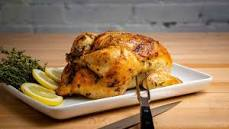

Lemon Herb Roasted Chicken

Lemon Herb Roasted Chicken is a succulent and aromatic dish featuring tender roasted chicken with a citrusy and herby twist.
Prepare a marinade using fresh lemon juice, garlic, herbs like rosemary and thyme, and olive oil. Rub the marinade all over the chicken, ensuring it's well coated, and let it marinate for a few hours.
Roast the chicken in the oven until golden brown and cooked through, basting with the marinade for extra flavor.Slice and serve the chicken with pan drippings, alongside roasted vegetables or a side salad for a delicious and comforting meal
Ingredients of making Lemon Herb Roasted Chicken
- 1 whole chicken
- 2 lemons, sliced
- Fresh herbs (such as rosemary, thyme, or parsley)
- 4 cloves of garlic, minced
- 2 tablespoons olive oil
- Salt and pepper to taste
How to prepare Lemon Herb Roasted Chicken
- step 1: Preheat the oven to 425°F (220°C).
- Rinse the chicken and pat it dry with paper towels.
- Place the chicken in a roasting pan and season it with salt and pepper.
- Stuff the cavity of the chicken with the sliced lemons, fresh herbs, and minced garlic.
- Drizzle the chicken with olive oil and rub it all over the skin.
- Roast the chicken in the preheated oven for about 1 hour or until the internal temperature reaches 165°F (74°C).
- Remove the chicken from the oven and let it rest for a few minutes before carving. Serve with your favorite side dishes.